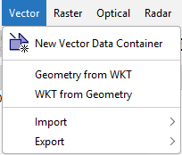
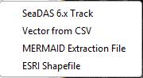
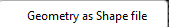

| Vector Menu | |

Opens a dialog for creating a new geometry container. The user is prompted to enter a unique name for the new container and an optional description.
Opens a dialog allowing to insert a geometry from WKT.
Opens a dialog allowing to copy the WKT of a selected geometry.

Allows the user to import track data generated with SeaDAS versions 6.x.
Allows the user to import Vector Data Node From CSV.
Allows the user to import MERMAID (MERis MAtchup In-situ Database) Extraction Files, which have become a very important data source for merged in-situ optical measurements with concurrent MERIS acquisitions.
Allows the user to import an ESRI Shapefile.

Allows the user to export the currently selected geometry as ESRI Shapefile.